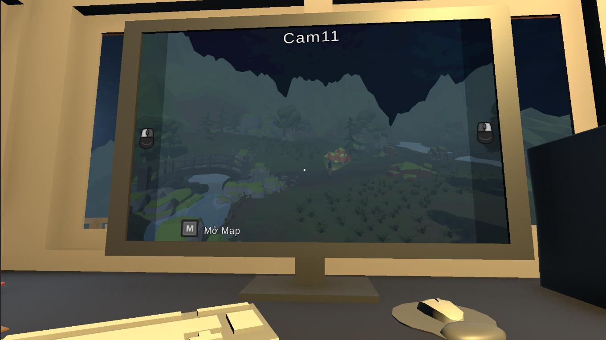
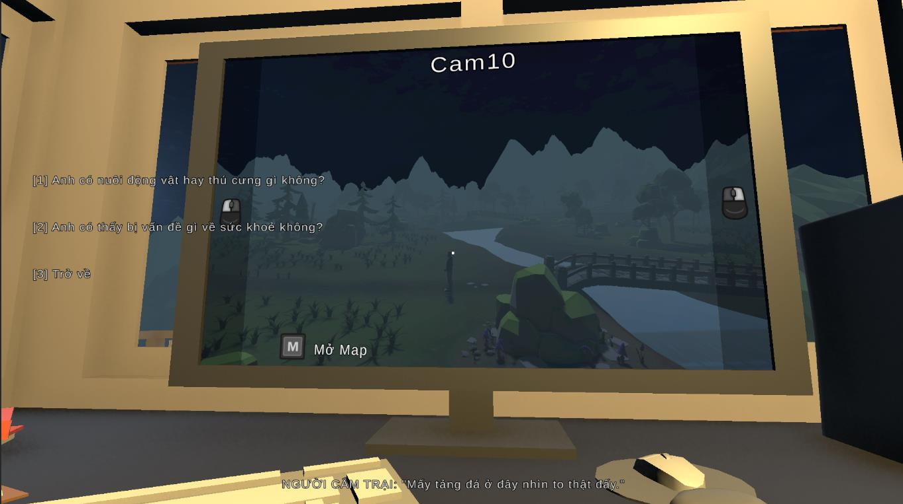
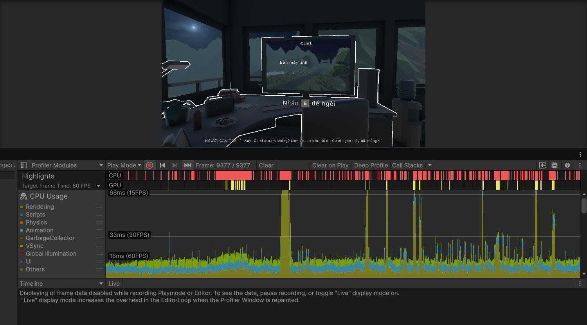

You Hear That?
A psychological horror experience built around surveillance, radio guidance and player decisions.

Language notice: The current game build supports Vietnamese only. English localization is not available yet.
A voice in the dark.
You work the night shift at a remote forest watchtower. A lost camper reaches you by radio. Monitor twelve surveillance viewpoints, study the surroundings and choose what to say as an unknown creature interferes with the rescue. Multiple endings depend on player decisions and game state.
Decisions with context.
I implemented a utility-based monster AI: individual considerations use configurable response curves to score possible behaviors. Visibility checks help constrain when the creature repositions out of the player's view.
Conceptual flow based on the implemented AI system.
Twelve views. One camera.
Instead of rendering twelve live cameras simultaneously, one rendering camera switches between predefined surveillance viewpoints. The output is displayed on a watchtower monitor using a Render Texture.

Dialogue that drives gameplay.
Ink dialogue tags and choices are connected to Unity game states, camper navigation, audio events and branching endings. Trust and Time Pressure influence how the experience unfolds.

Measured, not overstated.
The graduation report records six successful functional checks and approximately 60–75 FPS during normal gameplay on an RTX 3050 laptop, with dips around 55 FPS during rapid camera switching. These are reported observations, not a controlled before/after optimization benchmark.
Read testing notes ↗
Explore more of my work.
See my technical background and get in touch.